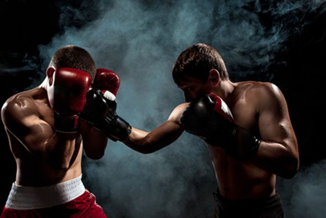

Robin Hoedt

Over mezelf
Ik ben Robin Hoedt en ben 17 jaar, Ik zit op ROC Nijmegen en doe de opleiding Software Developer, ik heb het erg naar me zin op de opleiding soms heb ik wat moeite met een paar vakken maar dan krijg ik meestal hulp van een medestudent of de docent, maar ik prober het natuurlijk eerst zelf uit te zoeken. Voor deze opleiding zat ik op het Citadel College in Lent en heb ik mijn Kader diploma gehaald. Buiten school werk ik in de kassen wat goed verdient, in de vakantie heb ik er 5 dagen in de week elke ochtend gewerkt. Ik sport zelf ook ik zit onder voetbal doe boksen en ook fitness, ik stop veel tzijd in het sporten omdat ik vaak beweeg en nooit echt te lang stil wil zitten, en een actief persoon ben

Mijn toekomst
In mijn toekomst komen er veel veranderingen. ik hoop na deze opleiding kunnen door te stromen naar het hbo software developer,
dat gaat een grote stap worden maar ik ga me best doen. En ik hoop daarna een goed betaalde baan te krijgen, en een gezond gezin.
Ik sport zelf ook veel dus hoop ook wat met mijn sport te kunnen bereiken daar ga ik ook heel veel voor moeten doen naast mijn school.